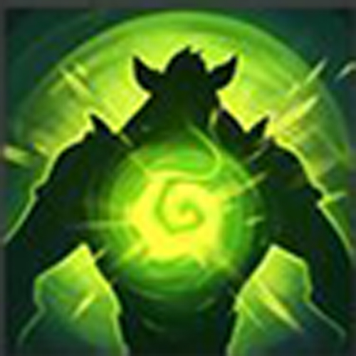
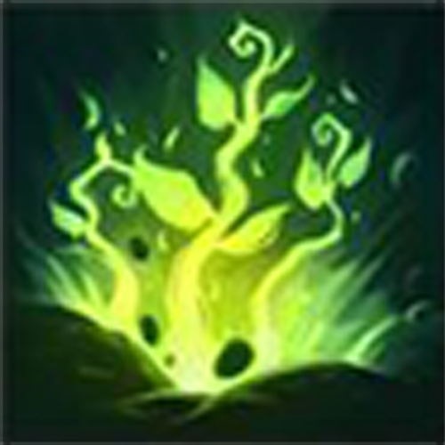

Voltar

Rargnos, O Curinqueã Xamã
! Em Desenvolvimento !
Identidade
Nome: Rargnos Brass
Idade: 19 Anos
Altura: 2,40 m
Gênero: Masculino
Classe: Xamã
Raça: Meio-Curinqueã
Pontos de personagem
Vida: ?? HP
Level: 1
Experiência: 00 / 150
Sanidade: 85%
Personalidade
Neutro-Neutro (Neutro Verdadeiro)
Personalidade: Leal, Sincero, Astuto e Esperançoso.
Inspirações: Contos dos antepassados e Histórias Antigas.
Defeitos: Vingativo e Teimoso.
Orientação: Hétero.
Objetivo: Conhecer a aldeia de sua mãe e buscar por suas origens.
Exemplos:
Modificador: [-X], [+X]
Bônus Raça: (X)
• FORÇA: 10 []
• CONTITUIÇÃO: 12 []
• DESTREZA: 11 () []
• INTELIGÊNCIA: 13 () []
• SABEDORIA: 3 () []
• CARISMA: 1 ()
• Espírito Curinqueã
{Passiva} (Raça)
Curinqueãns tem grande afinidade com o mundo espiritual.
Totens têm efeitos 50% melhores ao Rargnos.
• Amizade Espectral
{Passiva} Lvl 1
Toda vez que Rargnos evocar um totem, um camaleão espectral é sumonado.
Camaleão Espectral:
• Totem
4 Mana - 2 de mana para trocar - Lvl 1
Ragnos evoca um totem no campo de batalha e determina qual.
- Totem padrão: Cura 1 ponto de vida a cada jogada de cada jogador aliado.
- Totem Ar: Adiciona mais 1 de modificador em qualquer teste de destreza.
• Lança Arcanista
2 Mana - Lvl 1
Rargnos encanta sua lança com magia arcana aprimorando-a com algum elemento.
- Ar: A lança causa +1d2 de dano e não pode ser esquivada pelo inimigo.
- Fogo: A lança causa +1d2 de dano e causa 1d6 de dano de fogo por 2 turnos.
- Gelo: A lança causa +1d4 de dano e causa debuff de -2 Destreza ao inimigo por 2 turnos.
Historia
Rargnos Brass conhecido como Rargnos (Xamã da Ecdise) Nasceu de uma Curinqueã chamada Agnar Liz com um grande Xamã Voliher Brass exilado de suas terras.
Com o sangue mestiço cresceu fora da aldeia de seus ancestrais, com sua mãe sempre contando as histórias da terra sagrada, e seu pai que passou seus conhecimentos sobre a magia e espiritualidade.
Com o início da grande guerra, as Curinqueãs da sagrada árvore se uniram com os povos da terra de Mitrael para ser parte da frente de batalha. Rargnos e seu pai ansiavam todos os dias pela volta de Liz e nunca perderam a esperança.
Após longos 15 anos e com o fim da guerra, a esperança da volta de Liz foi perdida, seu pai adoecido pelo uso da magia acabou falecendo poucos meses e Rargnos se viu sozinho com seus 17 anos.
Após 1 ano de procura, Rargnos se viu perdido no abismo da loucura de seus pensamentos e lembranças, em seus últimos passos de frenesi dentro da floresta frívola, Rargnos encontrou um animal desconhecido que tinha um intenso brilho que emanava de seu corpo, no mesmo momento teve um flash de lembrança de seu prelúdio onde lembrou de seu animal de estimação, um camaleão que havia se perdido na floresta, ao voltar a realidade se deparou com o brilho ofuscando seu olhos e o animal desconhecido se transformou em um camaleão dourado, a transformação do animal assustou Rargnos que sentiu o calor de seu corpo aumentar e suas costas começaram a suar, as gotas emanam uma energia e desenharam em sua pele imagens arcanas desconhecidas, Rargnos perdeu a consciência, ao acordar teve um imprinting de memória do seu pai e foi quando ele entendeu o que havia acontecido. Rargnos enfrentou a ferocidade maléfica dos grandes animais caçadores para proteger as pessoas que adentrassem nas telas de Sovara Mithr, obteve conhecimento de sua magia e como a controlar.
Hoje anda pelas grandes florestas da árvore sagrada e anseia pela busca da aldeia de sua mãe, sonha com as terras que ouvirá quando pequeno e os mistérios de sua raça.
Não me importo o quão forte você é, se eu te enganar, eu ganhei.
Mais vale uma carteira na minha mão do que no bolso de alguém.